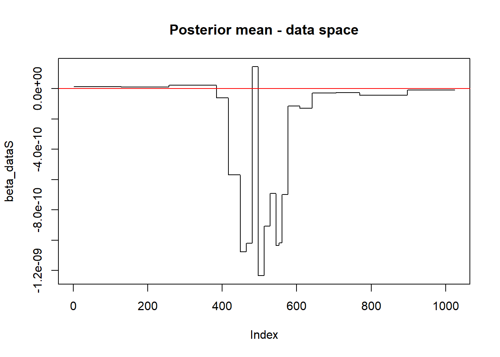
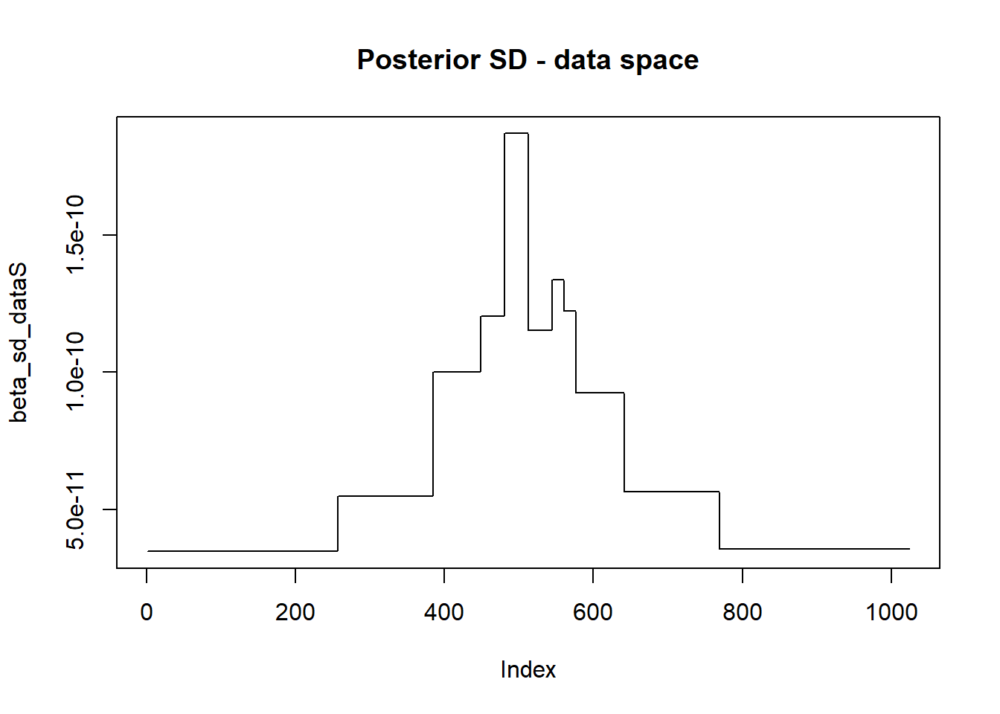
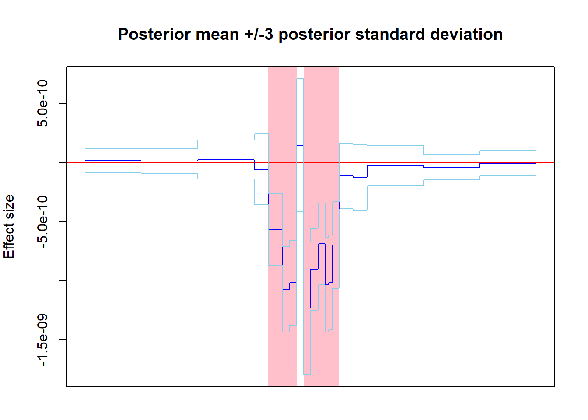
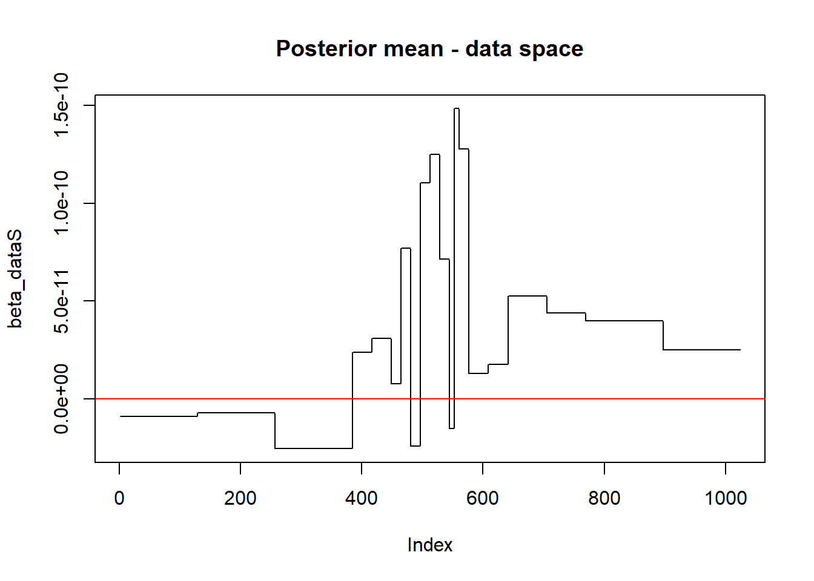
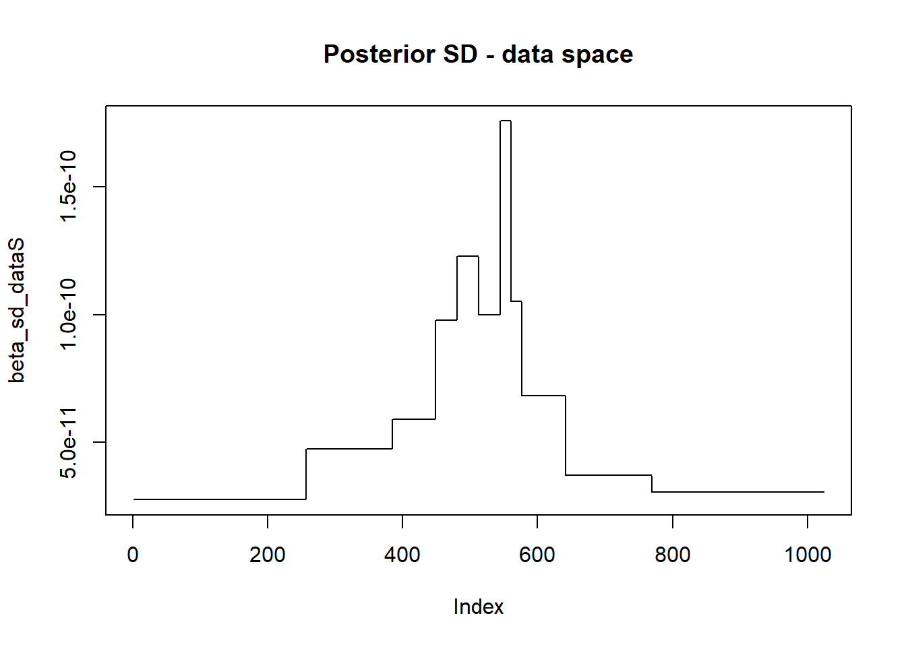
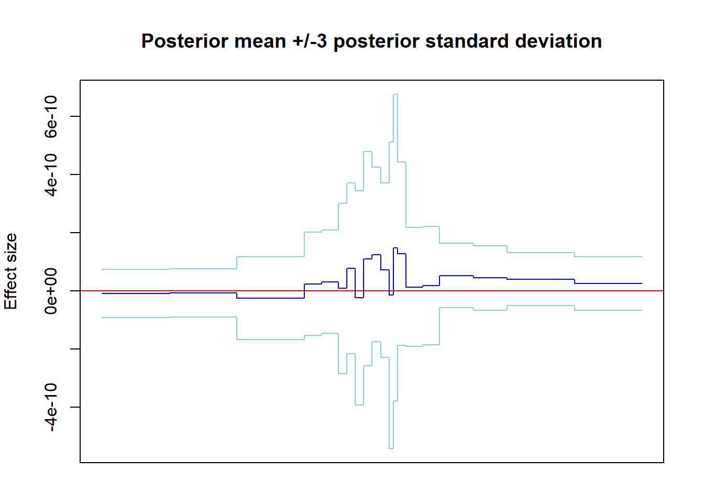

Here are some sample plots as per WaveQTL. These are the plots of the base locations, and the means and standard deviations of the data-space effect sizes at these bases. Using these, we can highlight base locations where we believe the SNP has a significant effect. The means, variances and likelihoods are after running the WaveQTL cpp code (see WaveQTL manual). Note that for WaveQTL there is one uniform \(\pi\) parameter governing the probability of non-zero effect size at each scale.
## chr LR
## 11 chr17.10161485 73.22246
## 12 chr17.10162386 72.47002
## 16 chr17.10162786 64.67191
## 13 chr17.10162576 30.19796
## 22 chr17.10163532 25.63576
## 4 chr17.10160195 12.68502
## 8 chr17.10161112 8.95551
## 2 chr17.10159236 6.68111
## 3 chr17.10160091 6.07022
## 14 chr17.10162681 2.36025
## 17 chr17.10162874 2.35788
## 15 chr17.10162695 2.35685
## 19 chr17.10163408 2.34085
## 20 chr17.10163424 1.63593
## 21 chr17.10163443 1.62816
## 23 chr17.10163747 1.53077
## 5 chr17.10160499 0.91667
## 10 chr17.10161395 0.67852
## 6 chr17.10160773 0.67573
## 7 chr17.10161074 0.67506
## 24 chr17.10163945 0.59943
## 18 chr17.10162892 0.56394
## 9 chr17.10161218 0.36199
## 1 chr17.10159002 0.33420Turns out SNP 11 has the highest LogLR (this statistic indicates highest probability of contrast between alternative (\(\pi =\hat{\pi}\)) and null models (\(\pi \equiv 0\)))
LRatios[c(11,1),]## chr LR
## 11 chr17.10161485 73.22246
## 1 chr17.10159002 0.33420SNP 11 analysis. The pink regions denote bases where the mean is significantly (+ 3SDs) away from 0, denoting a significant effect size of SNP at that base in the data space. The light blue lines are the $$3 SD regions from the mean. Hence, the significantly different to 0 regions are regions where the light blue lines capture a region which no longer includes 0 (red line) in it.
## We'll look at effect size of 11th SNP in genotype file
sel_geno_IX = 11
## Read posterior mean and varaince of effect sizes in Wavelet space
## Set a path to files
beta_mean_path= paste0(test.path,"output/test.no.QT.fph.mean.txt")
beta_var_path = paste0(test.path,"output/test.no.QT.fph.var.txt")
## Read posterior mean in Wavelet space and transform them back to data space
beta_mean = as.numeric(read.table(beta_mean_path)[sel_geno_IX,2:1025])
beta_dataS = as.vector(-matrix(data=beta_mean, nr = 1, nc = 1024)%*%as.matrix(Wmat_1024))
length(beta_dataS)## [1] 1024## Read posterior variance in Wavelet space, transform them back to data space, and get standard deviation
beta_var = as.numeric(read.table(beta_var_path)[sel_geno_IX,2:1025])
beta_var_dataS = as.vector(matrix(data=beta_var, nr = 1, nc = 1024)%*%as.matrix(W2mat_1024))
beta_sd_dataS = sqrt(beta_var_dataS)
length(beta_sd_dataS)## [1] 1024plot(beta_dataS,type = "l", main = "Posterior mean - data space")
abline(h = 0, col = "red")
plot(beta_sd_dataS,type = "l", main = "Posterior SD - data space")
abline(h = 0, col = "red")
## Visualize estimated effect size in the data space
ymin_beta = min(beta_dataS - 3*beta_sd_dataS) - abs(min(beta_dataS - 3*beta_sd_dataS))*0.0000000001
ymax_beta = max(beta_dataS + 3*beta_sd_dataS) + abs(max(beta_dataS + 3*beta_sd_dataS))*0.0000000001
beta_l = beta_dataS - 3*beta_sd_dataS
beta_r = beta_dataS + 3*beta_sd_dataS
# Significance, beyond 3 SDs (for plotting)
wh_l = which(beta_l > 0)
wh_r = which(beta_r < 0)
high_wh = sort(unique(union(wh_l, wh_r)))
xval = 1:1024
col_posi = xval[high_wh]
par(mar = c(2,4,4,2))
plot(1,1,type="n", xlab = "position", ylab = "Effect size",ylim=c(ymin_beta, ymax_beta),xlim=c(1, 1024),main ="Posterior mean +/-3 posterior standard deviation", axes=FALSE)
axis(2)
if(length(col_posi) > 0){
for(j in 1:length(col_posi)){
polygon(c(col_posi[j]-0.5, col_posi[j]-0.5, col_posi[j]+0.5, col_posi[j]+0.5), c(ymin_beta-2, ymax_beta+2, ymax_beta+2, ymin_beta-2), col ="pink", border = NA)
}
}
abline(h = 0, col = "red")
points(xval, beta_dataS, col = "blue", type="l")
points(xval, beta_l, col = "skyblue", type="l")
points(xval, beta_r, col = "skyblue", type="l")
box()
SNP 1:
## 1 has the lowest LogLR
sel_geno_IX = 1
## Read posterior mean and varaince of effect sizes in Wavelet space
## Set a path to files
beta_mean_path= paste0(test.path,"output/test.no.QT.fph.mean.txt")
beta_var_path = paste0(test.path,"output/test.no.QT.fph.var.txt")
## Read posterior mean in Wavelet space and transform them back to data space
beta_mean = as.numeric(read.table(beta_mean_path)[sel_geno_IX,2:1025])
beta_dataS = as.vector(-matrix(data=beta_mean, nr = 1, nc = 1024)%*%as.matrix(Wmat_1024))
length(beta_dataS)## [1] 1024## Read posterior variance in Wavelet space, transform them back to data space, and get standard deviation
beta_var = as.numeric(read.table(beta_var_path)[sel_geno_IX,2:1025])
beta_var_dataS = as.vector(matrix(data=beta_var, nr = 1, nc = 1024)%*%as.matrix(W2mat_1024))
beta_sd_dataS = sqrt(beta_var_dataS)
length(beta_sd_dataS)## [1] 1024plot(beta_dataS,type = "l", main = "Posterior mean - data space")
abline(h = 0, col = "red")
plot(beta_sd_dataS,type = "l", main = "Posterior SD - data space")
abline(h = 0, col = "red")
## Visualize estimated effect size in the data space
ymin_beta = min(beta_dataS - 3*beta_sd_dataS) - abs(min(beta_dataS - 3*beta_sd_dataS))*0.0000000001
ymax_beta = max(beta_dataS + 3*beta_sd_dataS) + abs(max(beta_dataS + 3*beta_sd_dataS))*0.0000000001
beta_l = beta_dataS - 3*beta_sd_dataS
beta_r = beta_dataS + 3*beta_sd_dataS
# Significance, beyond 3 SDs (for plotting)
wh_l = which(beta_l > 0)
wh_r = which(beta_r < 0)
high_wh = sort(unique(union(wh_l, wh_r)))
xval = 1:1024
col_posi = xval[high_wh]
par(mar = c(2,4,4,2))
plot(1,1,type="n", xlab = "position", ylab = "Effect size",ylim=c(ymin_beta, ymax_beta),xlim=c(1, 1024),main ="Posterior mean +/-3 posterior standard deviation", axes=FALSE)
axis(2)
if(length(col_posi) > 0){
for(j in 1:length(col_posi)){
polygon(c(col_posi[j]-0.5, col_posi[j]-0.5, col_posi[j]+0.5, col_posi[j]+0.5), c(ymin_beta-2, ymax_beta+2, ymax_beta+2, ymin_beta-2), col ="pink", border = NA)
}
}
abline(h = 0, col = "red")
points(xval, beta_dataS, col = "blue", type="l")
points(xval, beta_l, col = "skyblue", type="l")
points(xval, beta_r, col = "skyblue", type="l")
box()